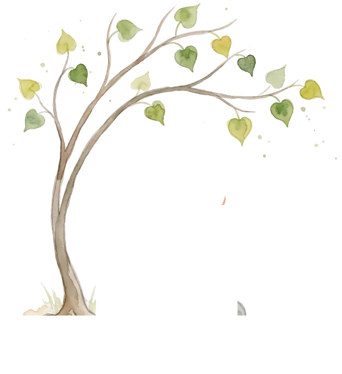
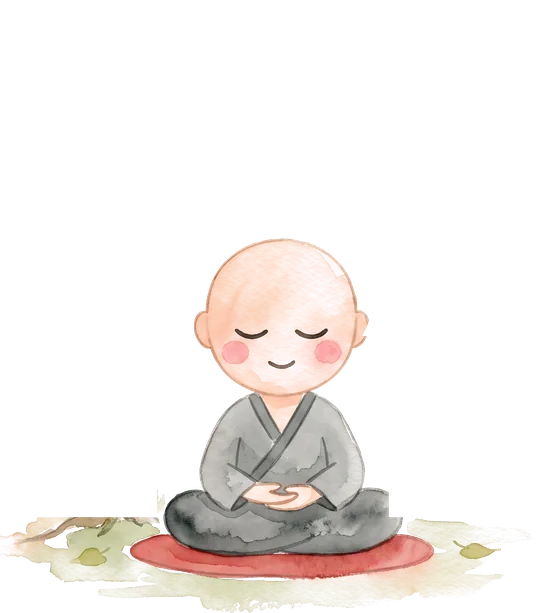
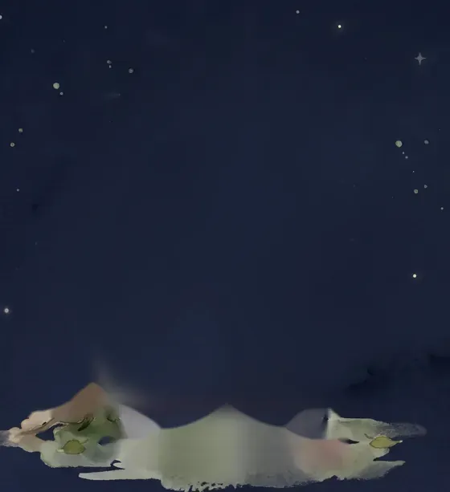
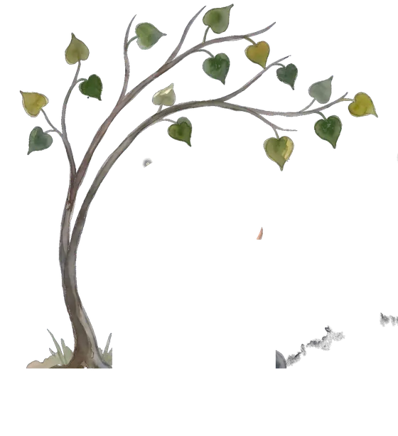
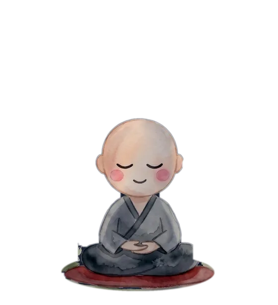

스토리 미리보기
영상을 만든 뒤 공유 버튼으로 인스타그램 스토리에 올릴 수 있어요.
하루 한 구절, 처음부터 끝까지 옮겨 써요.
완주하는 날, 이분께 회향해요.





오늘의 사경을 마쳤어요
가운데 ＋를 눌러 첫 바람을 띄워 보세요
마음에 품은 바람을 적고 연꽃 등을 띄워요. 여정을 마칠 때도 회향 등이 하나씩 떠올라요.
바람을 한 줄 적어 주세요.
경전을 한 글자씩 옮겨 쓰며 마음을 모으는 오래된 수행이에요. 인쇄술이 없던 시절 경전을 널리 전하려고 시작되었고, 지금은 마음을 가다듬는 수행으로 이어지고 있어요. 잘 쓰는 것보다 한 글자에 집중하는 것이 중요해요.
하루에 한 구절씩 처음부터 끝까지 순서대로 써요. 하루를 빠져도 건너뛰지 않고 멈춘 곳에서 이어 쓰면 돼요. 마지막 구절을 쓰는 날, 회향으로 여정을 마무리해요.
내가 쓴 사경의 좋은 기운을 다른 이에게 돌려 바치는 일이에요. 돌아가신 분, 아픈 가족, 힘든 친구, 혹은 세상의 모든 이를 위해 회향할 수 있어요.
진언은 뜻보다 소리 자체에 힘이 있다고 보아, 옛 소리를 그대로 외우고 써요. 대신 풀이에서 뜻과 오늘의 확언을 함께 보여드려요.
밝은 한지 화면과 어두운 새벽 화면 중에 골라요.
오른쪽 위의 공이 커지면 들이쉬고, 작아지면 내쉬어요. 공을 누르면 잠시 멈춰요.
사경하는 동안 들을 자연의 소리를 골라요.
한 글자 쓸 때마다 나는 소리예요.
기록은 이 기기의 브라우저에만 저장돼요. 첫 번째 시제품이라 로그인과 백업은 아직 없어요.
테스트 결제예요. 실제로 돈이 나가지 않아요.
결제 수단
결제하는 중이에요
결제가 완료됐어요
영상을 만든 뒤 공유 버튼으로 인스타그램 스토리에 올릴 수 있어요.